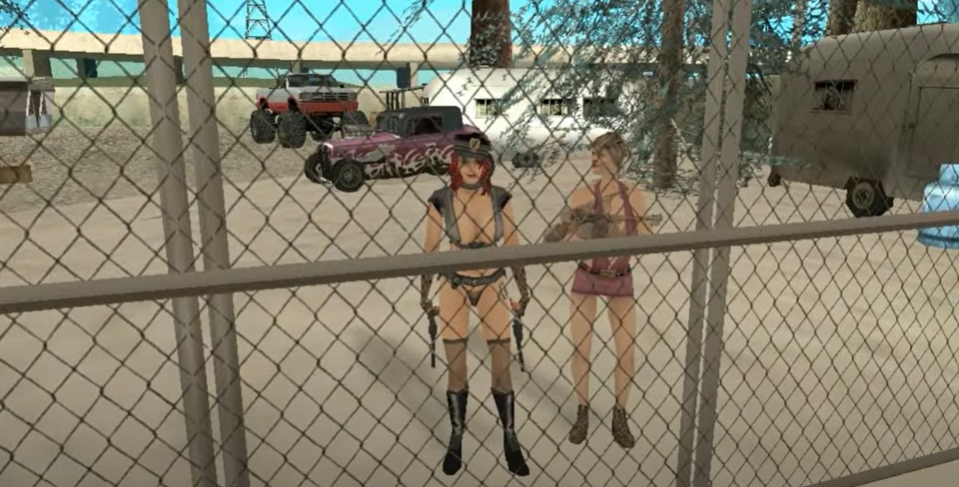

Mercenários e Personagens Independentes
Aliens do Bem
Eles apareceram para o CJ pedindo ajuda e dizendo que em breve a terra seria invadida por aliens. No entanto, eles escondem algo sobre este universo.
Dubladores: Kaique e Pedroness
Jeff
Ele é um amigo do CJ e gosta muito passar um tempo no bar. Ele não acredita que monstros existem.
Dublador: Bruno Garcia
Ken Rosenberg
Ele é dono do ChuckUp Complex e comanda um grupo privado que enriqueceu comprando títulos imobiliários em Las Venturas. Ele está procurando por uma ninja em San Andreas.
Dublador: Diego Porfírio
Kent Paul
Ele é um dos capangas de Ken Rosenberg e sempre está ali obedecendo a qualquer ordem. Sua missão no momento é capturar a ninja assassina.
Dublador: Lucas Alves
Maccer
Ele obedece às ordens de Ken Rosenberg e junto com Kent Paul está tentando encontrar a ninja assassina que sempre está causando confusão por San Andreas.
Dublador: Gabriel
Randolph Carter
Ele é um homem misterioso que contratou os Mythbusters para caçar monstros do Mundo dos Sonhos que estão invadindo San Andreas.
Dublador: Igor Madeira
Policial Cooper
Ele é um policial que se demitiu para caçar o Caipira do Mal. Ele quer vingança pelo Caipira do Mal ter matado seu filho.
Dublador: Paulo
Chefe da Silver Night
Ele é um misterioso personagem que se diz líder de uma organização chamada “Silver Night”. Ele quer a ajuda do Shadow não importa o que aconteça.
Dublador: Luan Lima

Tia Tânia e sua Sobrinha
Elas são da mesma família e seguiram nesta carreira de mercenárias por ser dinheiro fácil.
Dubladores: Anna Boé e Danilo
Viajante do Tempo
Ele trabalha com viagens no tempo em San Andreas como se fossem passeios turísticos. Ninguém sabe seu nome.
Dublador: Fernando Quebing
Adora
Ela é discípula do viajante do tempo e quer seguir na mesma área turística que seu mestre. No entanto, seu mestre desapareceu misteriosamente e, agora, sua missão é encontrá-lo.
Dublador: Vanessa Secco
Blaze
Ele é um mercenário que aceitou um trabalho da MIB para proteger um Myth Spot no Monte Chilliad. Ele é realmente poderoso com seus poderes.
Dublador: Michel
Cultista
Ex-cultista da seita do Glen Park, ele agora viaja San Andreas inteira atrás de corpos que sejam poderosos o bastante para o Convidado.
Dublador: Wesley
Detetive
Ele é um misterioso homem que perdeu sua mulher em um estranho acidente. Agora, ele é o verdade policial “Hardboiled”.
Dublador: Luís Fernando
Tio do Hot Dog
Ele tenta trabalhar vendendo hot dogs, mas sempre alguém relacionado com os Mythbusters atrapalha ele. É por isso que ele odeia os Mythbusters.
Dublador: Jean